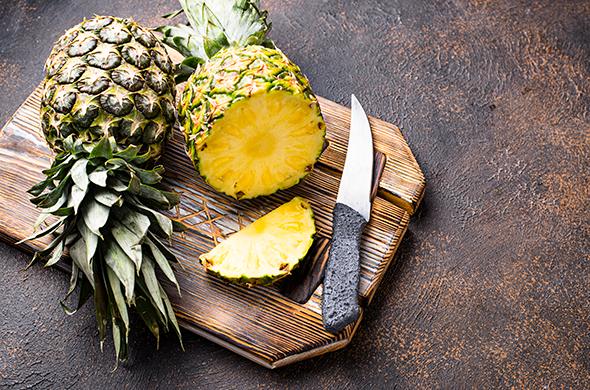

‖ Top 5 loại trái cây tốt nhất cho sức khỏe

Một quả táo tuy chứa ít calo (khoảng 80) song lại giàu quertecin – chất chống oxy hóa giúp phòng ngừa quá trình thoái hóa tế bào não dẫn đến bệnh Alzheimer. Táo cũng có tác dụng điều hòa huyết áp, với chất xơ trong táo giúp hạ nồng độ cholesterol. Chúng ta nên ăn cả quả bởi vỏ táo cũng chứa nhiều hợp chất tốt như flavonoid – giúp làm giảm nguy cơ bệnh tim.
Chuối là loại trái cây giàu kali và chất xơ giúp cơ thể sinh năng lượng và tỉnh táo trong ngày. Chuối cũng không chứa chất béo hay muối, do đó đây là sự lựa chọn lành mạnh thay cho những loại đồ ăn vặt như bánh quy hay kẹo socola. Nếu bạn muốn bảo quản lâu hơn, hãy bỏ chuối vào trong tủ lạnh sau khi chúng đã chín.
Xoài là loại trái cây nhiệt đới giàu dinh dưỡng với hàm lượng beta-caroten cao, từ đó cơ thể sẽ chuyển hóa thành vitamin A giúp tăng cường hệ miễn dịch và cải thiện thị lực. Một cốc xoài (165 g) cung cấp 60 mg vitamin C – gần như đáp ứng nhu cầu của cơ thể trong ngày.

Kali là một khoáng chất rất tốt cho tim mạch, cơ bắp, xương khớp và còn giúp phòng ngừa sỏi thận. Ngoài chuối, đào và xuân đào (một giống đào trơn) cũng là một trong những nguồn kali dồi dào nhất. Một quả đào hoặc xuân đào cỡ lớn cung cấp hơn 300 mg kali, đáp ứng khoảng 10% lượng kali mà cơ thể người lớn cần nạp trong một ngày. Bên cạnh đó, vỏ quả đào cũng giàu chất chống oxy hóa, giúp cơ thể kháng viêm. Đào cũng là một loại trái cây tốt, giúp bổ sung vị ngọt tự nhiên cho thực đơn giảm cân.
Những quả dứa thơm ngọt chứa rất nhiều bromelain – một loại enzym kháng viêm có thể làm giảm nguy cơ đau tim và đột quỵ. Ngoài ra, dứa còn giúp hỗ trợ tiêu hóa, tăng cường miễn dịch và tốt cho da.
